%20(2).jpg)
Nossa Casa
Sala
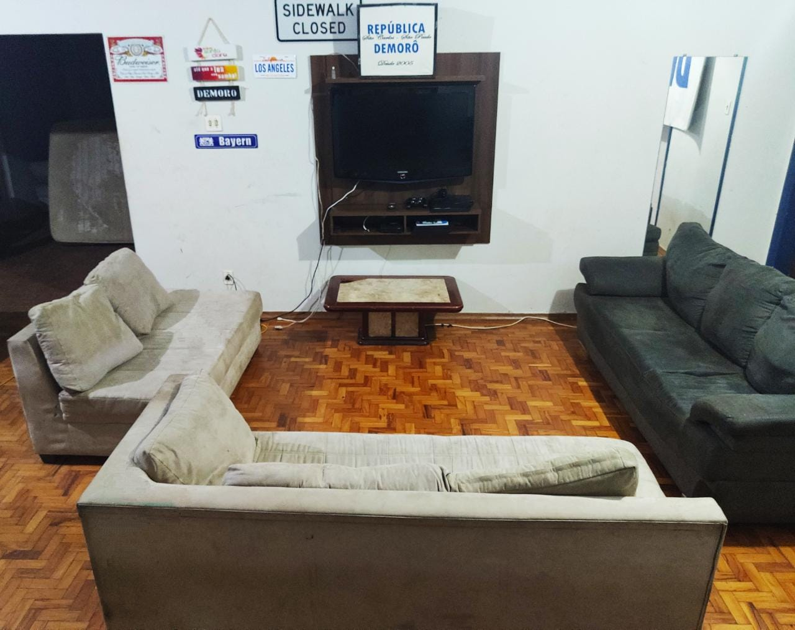
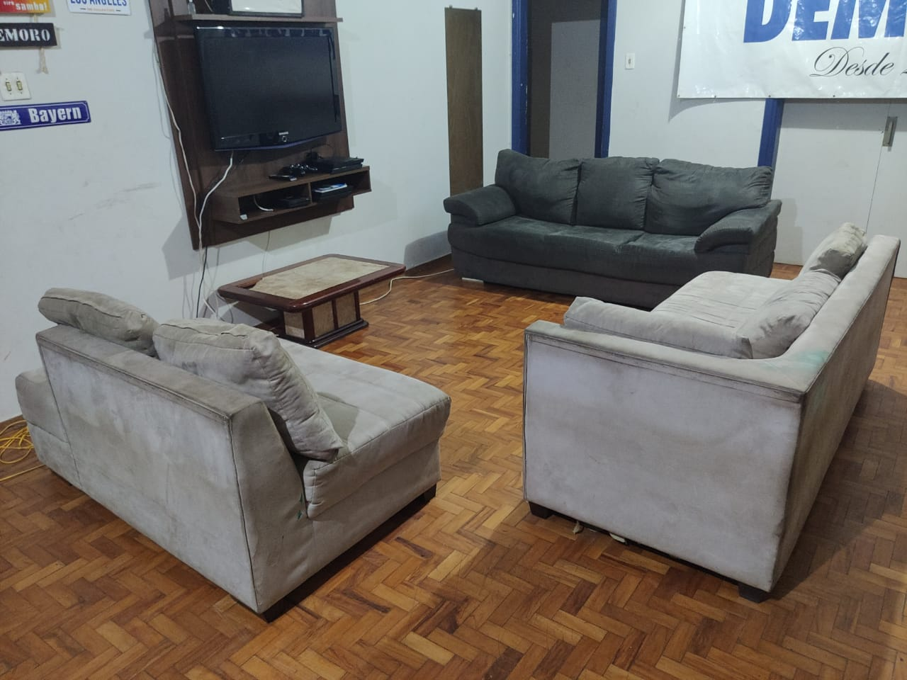
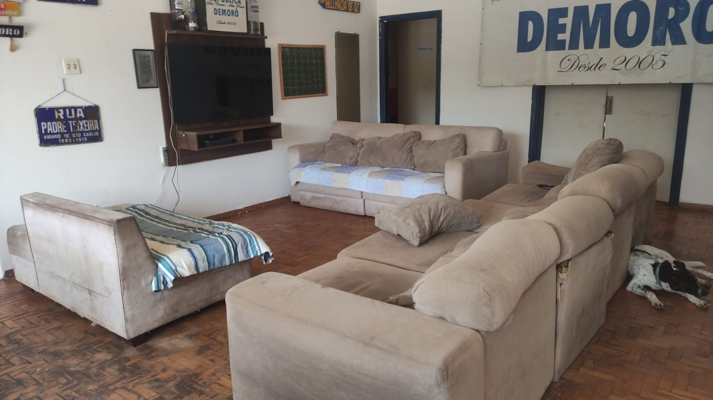
Temos 2 salas bem espaçosas!
Na sala principal, possuímos uma TV de 50 polegadas e é onde nos reunimos todos os dias para almoçarmos juntos, fazer aquela resenha e assistir a alguns filmes!
Na salinha é onde tiramos um tempo para relaxar dos estudos e nos divertimos um pouco. Nela, temos mais uma TV de 45 polegadas, PS4 com inúmeros jogos e 3 sofás!
Quartos
Nossa casa possui 8 quartos amplos, todos equipados com armários e mesas de estudo para garantir conforto e praticidade.
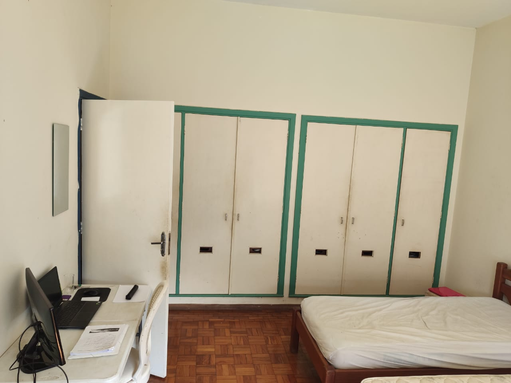
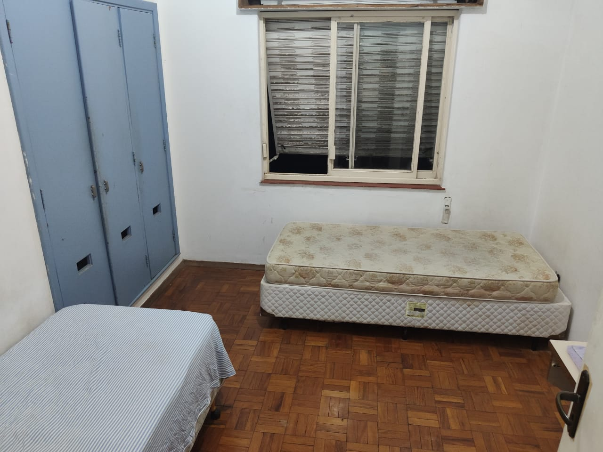
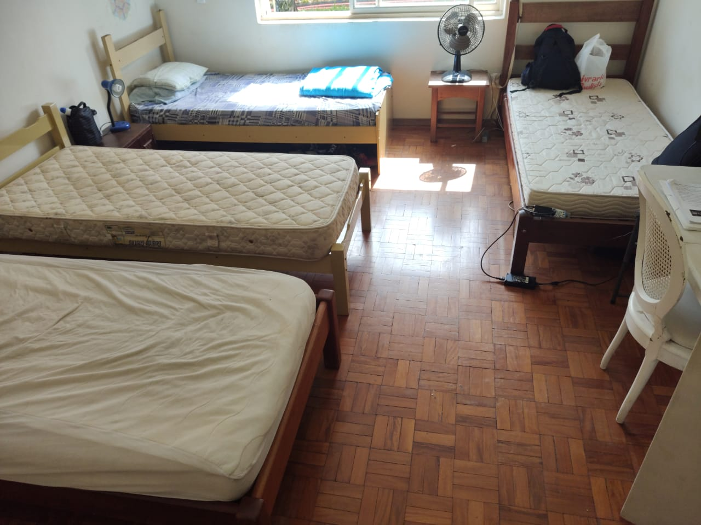
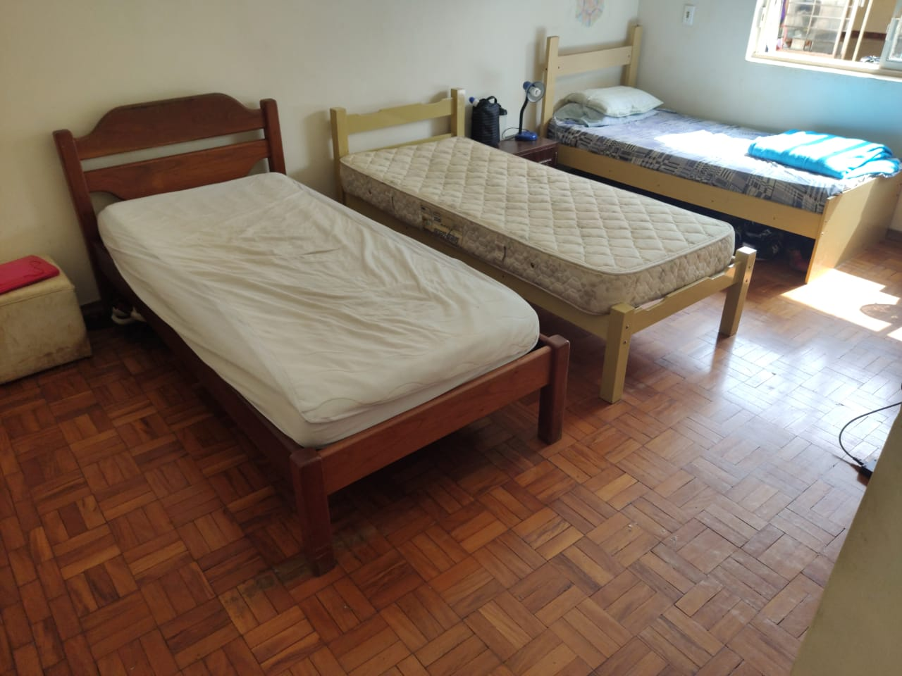
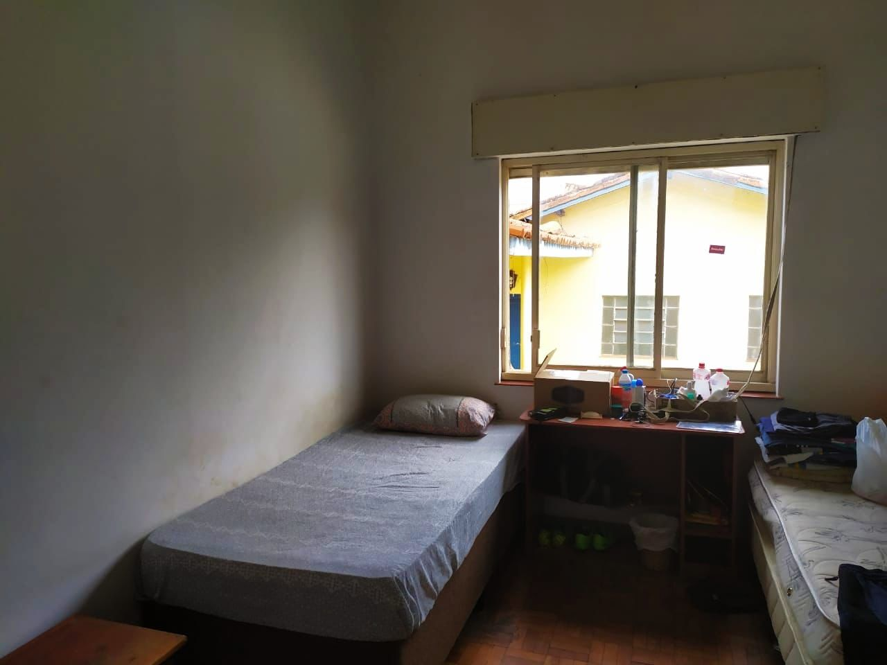
Cozinha
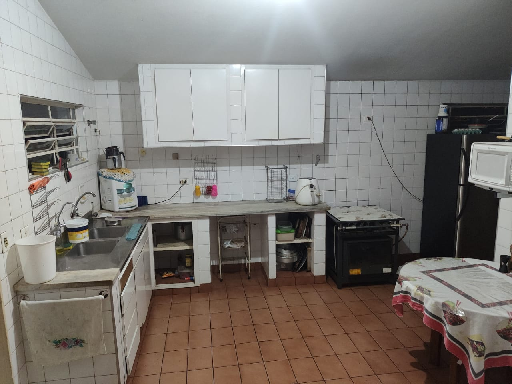
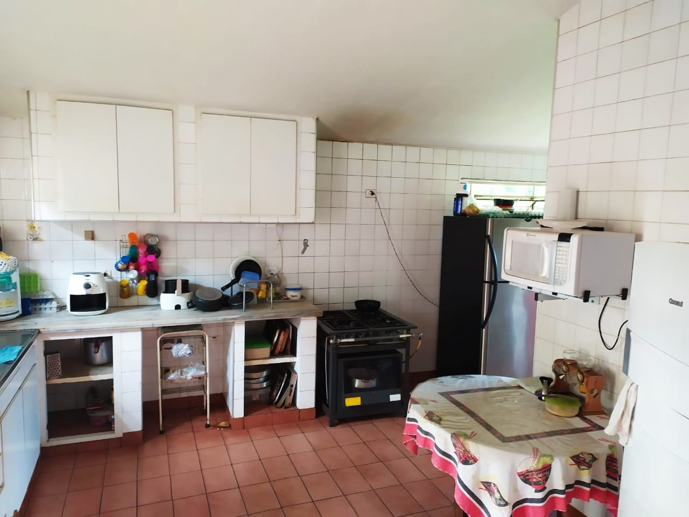
Possuímos uma cozinha ampla, com diversos armários para a divisão entre os moradores e 1 fogão industrial.
Também possuímos Air-Fryer, 2 geladeiras, microondas, forno elétrico e tudo que é necessário para fazermos nossas refeições aos finais de semana.
Sala de Estudos
Nossa sala de estudos fica afastada de todo o restante da casa.
Equipada com mesas, cadeiras e uma rede para dar aquela descansada de vez em quando, aqui é o ambiente perfeito para fazer reuniões, estudar e dar uma deitada na rede nos momentos de cansaço.
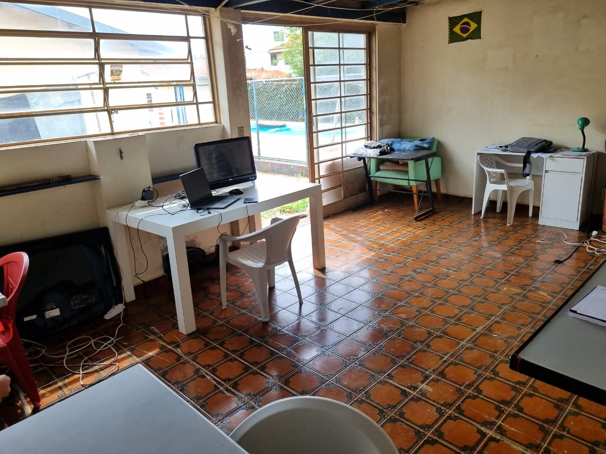
Área de Lazer e Piscina
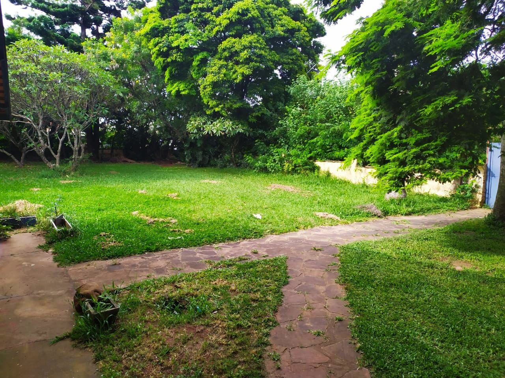
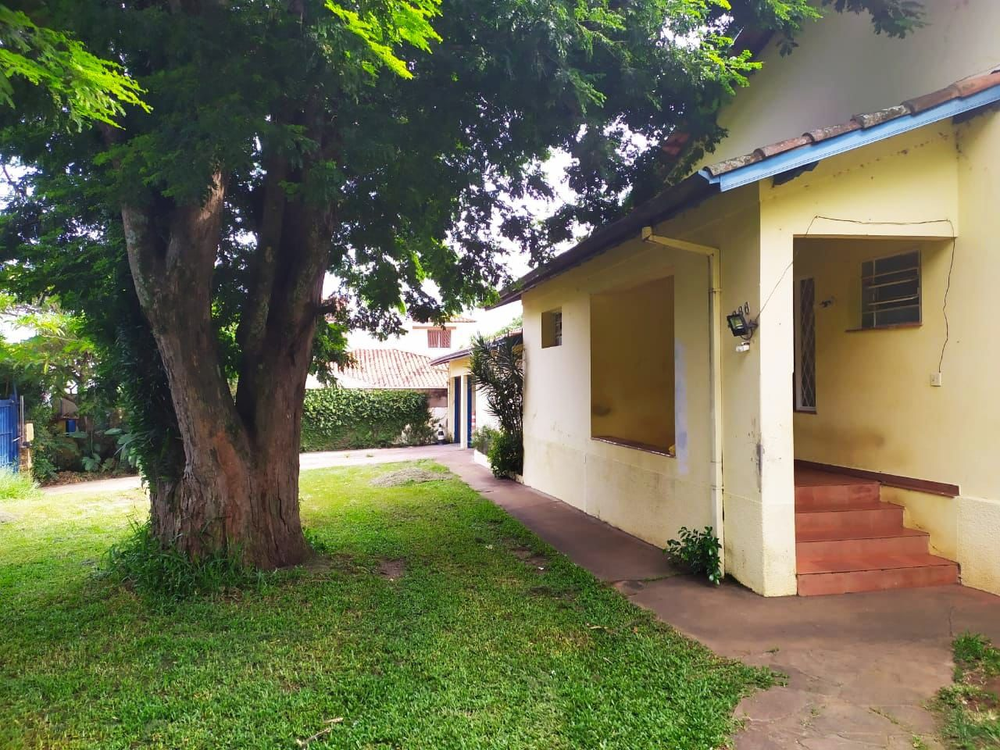
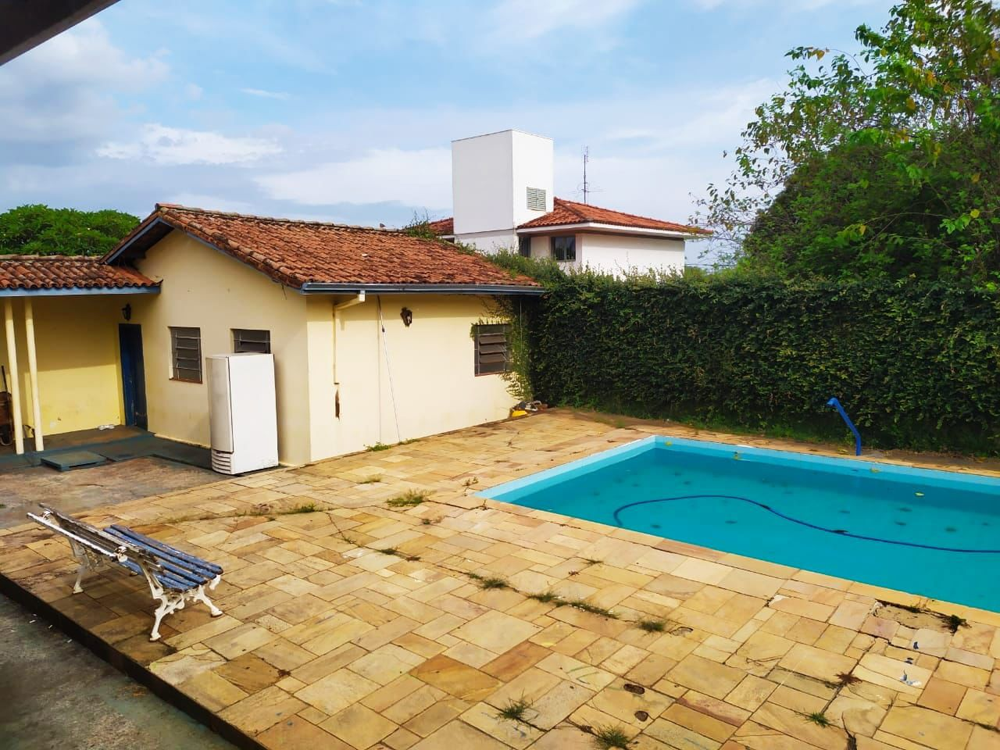
Aqui é onde passamos a maior parte dos nossos finais de semana!
Nosso quintal é um dos maiores entre as Repúblicas de São Carlos, com mais de 1200 m²! Nele, fazemos nossos Churrascos de Ex-Moradores e dos Pais, perfeito para um dia de churrasco, chopp e muita conversa.
Na nossa área de piscina nos reunimos quase todos os finais de semana para fazermos um churrasco entre nós nos dias ensolarados.